Week 8 联合概率，边际概率，双变数期望值
8.1 联合概率分布
JOINT PROBABILITY DISTRIBUTION
- 当小明出国去交换时
- 𝑿: 小美脸书/QQ 脱机时间，𝑿~𝑼𝑵𝑰𝑭(𝟖, 𝟏𝟐)
- 𝒀: 小华脸书/QQ 脱机时间，𝒀~𝑼𝑵𝑰𝑭(𝟖, 𝟏𝟐)
- 𝒁: 小园脸书/QQ 离线时间，𝒁~𝑼𝑵𝑰𝑭(𝟖, 𝟏𝟐)
- 假设 𝑿, 𝒀, 𝒁 都是离散随机变数
- 若将小美脱机时间 𝑿 与小园脱机时间 𝒁一起看呢?
- 画出𝑷𝑿=𝒙,𝒁=𝒛:
- 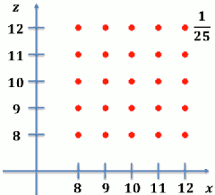
- 若将小美脱机时间 𝑿 与小园脱机时间 𝒀一起看呢?
- 画出𝑷 𝑿=𝒙,𝒀=𝒚 ，赫然发现!
- 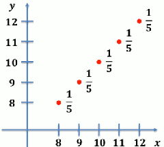
- 同时将多个随机变量的行为一起拿来看， 我们可以看出更多以往看不到的信息!
- 同时考虑多个随机变量的机率分布称之为联合机率分布 (joint probability distribution)
联合 PMF (Joint PMF)
- 若𝑿,𝒀皆为离散随机变量，我们 可以定义他们的联合PMF
- pX,Y(x,y) = P( X=x 且 Y=y )
- 联合PMF决定了𝑿,𝒀的联合机率分布
- Ex: 小美脱机时间 𝑿 与小华脱机时间 𝒀 的联合 PMF:
- pX,Y(x,y) = P( X=x, Y=y )
联合 PMF 的性质
- 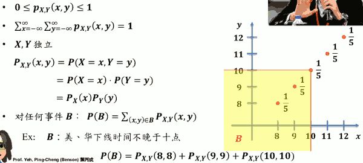
联合 CDF (Joint CDF)
若考虑两个随机变数 𝑿, 𝒀 的联合机率分布， 我们也可定义出所谓的联合 CDF:
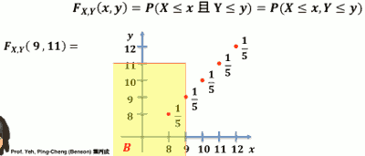
即, (X,Y) 会落在黄色区域的几率
联合 CDF 的性质
- 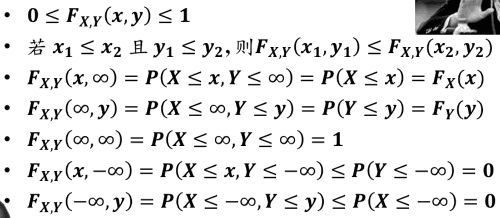
if X and Y are independent, then FX,Y(x,y) = FX(x)·FX(y)
- 反之亦然 !!!
四方格性质
- 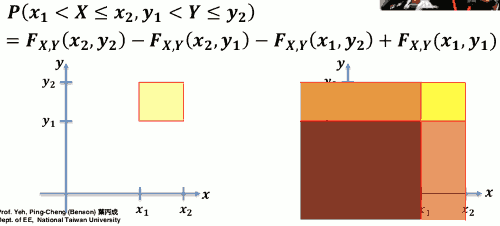
- 你只需要知道4个顶点的 cdf 值
联合 PDF 例子
- Ex:小美等公交车时间为 𝑿, 小园等公交车时间为 𝒀 𝑿, 𝒀 两者独立且皆为连续之机率分布 𝑼𝑵𝑰𝑭 𝟎, 𝟏𝟎 。则 𝑿, 𝒀之联合 PDF 为
- 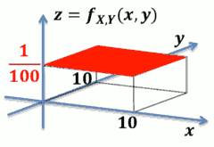
- 其他的联合pdf例子
- 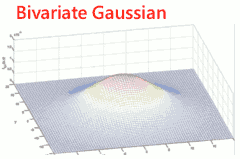
若𝑿, 𝒀 皆为连续随机变数怎办?
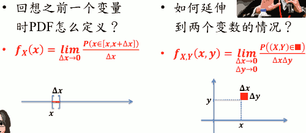
若 𝑿, 𝒀 皆为连续随机变量，我们可以定义联合 PDF:
- 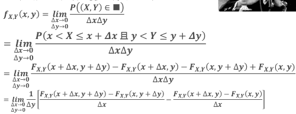
- 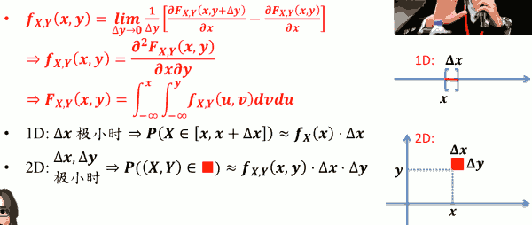
连续联合 PDF 的性质
- 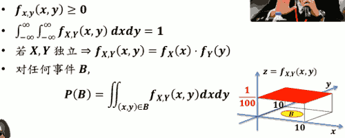
- P(B) 是圆锥体体积
8.2 边际机率分布
MARGINAL PROBABILITY DISTRIBUTION
已知联合 PMF，欲得个别 PMF
- Ex: 𝑿,𝒀分别为小美、小丽脸书/QQ 脱机时间。联合 PMF 如下:
| pX,Y(x,y) | X = 8 | X = 9 | X = 10 |
|---|---|---|---|
| Y = 8 | 0.2 | 0.1 | 0.05 |
| Y = 9 | 0.05 | 0.2 | 0.1 |
| Y = 10 | 0.05 | 0.1 | 0.15 |
- pX(x) = ? pY(y) = ?
- pX(8) = 0.2 + 0.05 + 0.05 = 0.3
- pX(9) = 0.1 + 0.2 + 0.1 = 0.4
- pX(10) = 0.05 + 0.1 + 0.15 = 0.3
- 整列加起来，然后(在它的边缘)写上数字，这就是 "边际"的由来
边际 PMF (Marginal PMF)
- 已知联合PMF pX,Y(𝒙,𝒚)，则可求得 pX(x), pY(y) ，称之为边际 PMF
- 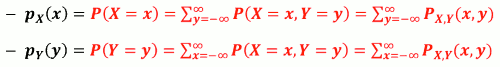
边际 PDF (Marginal PDF)
- 已知联合PDF fX,Y(𝒙,𝒚)，则可求得 fX(x), fY(y) ，称之为边际 PDF
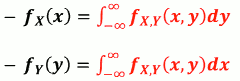
Ex:
- 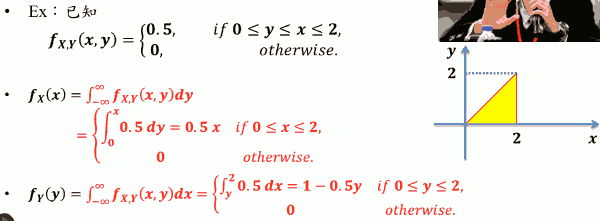
8.3 双变数期望值
离散
- 回想只考虑一个离散随机变数𝑿时 其任意函数 g(x)的期望值是:
- 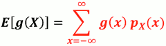
- 若同时考虑两个离散随机变量𝑿,𝒀时，他们的任 意函数 h(X,Y) 的期望值是
- 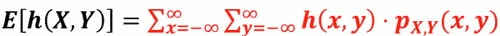
- Ex. 参考上面 小美、小丽脸书/QQ 脱机 时间的例子, 求 E[ |X-Y| ]
- 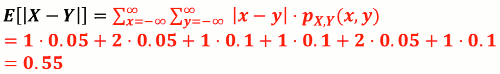
- 回想只考虑一个离散随机变数𝑿时 其任意函数 g(x)的期望值是:
连续
- 回想只考虑一个连续随机变量𝑿时 其任意函数 g(X) 的期望值是:
- 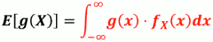
- 若同时考虑两个连续随机变数𝑿,𝒀时，他们的任 意函数 h(X,Y) 的期望值是
- 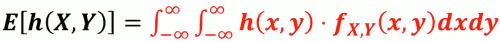
- 回想只考虑一个连续随机变量𝑿时 其任意函数 g(X) 的期望值是:
性质
- E[ αh₁(X,Y) + βh₂(X,Y) ] = αE[h₁(X,Y)] + βE[h₂(X,Y)]
- 若 X,Y 独立， 则
- E[g(X)h(Y)] = E[g(X)]·E[h(Y)]
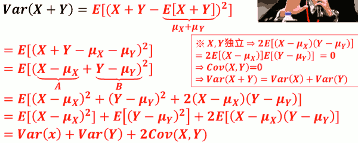
Var[aX+bY] = a²Var[X] + b²Var[Y] + 2Cov[X,Y]
- 如果X，Y独立
- Var[aX+bY] = a²Var[X] + b²Var[Y]